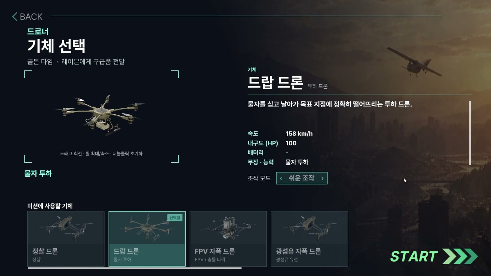
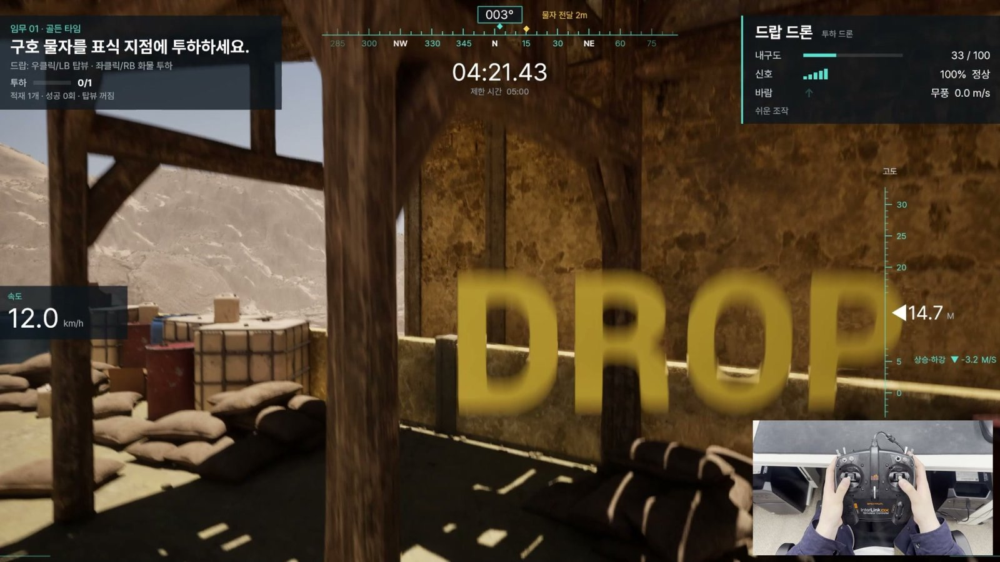
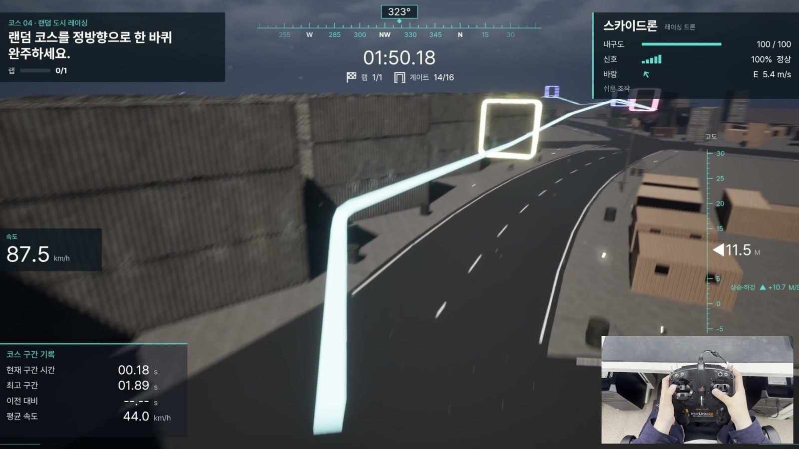

클릭하여 확대
클릭하여 확대


드로너 (Droner)
드론 레이싱 · 미션 게임 · 캡스톤 졸업작품
Unreal Engine 5 · C++ · 블루프린트 · 2026
훈련, 게이트 레이스, 물자 투하와 전투 미션을 드론으로 수행하는 게임입니다. 기획·레벨·UI/UX·모델링 담당 팀원과 함께 만들었습니다.
각속도 기반 비행 모델과 조작 보조, 데이터로 짜는 미션 시스템, 적 AI와 무기를 구현했고, 테스트를 맡아 수정할 때마다 코드 리뷰와 회귀 테스트로 기존 기능이 깨지지 않았는지 확인했습니다.
담당프로그래밍 · 시스템 · 테스트
6역할이 다른 기체
28회귀 테스트 통과
15/15맵 연결 검사
17맵 실측 대조


 ▶ 영상
▶ 영상